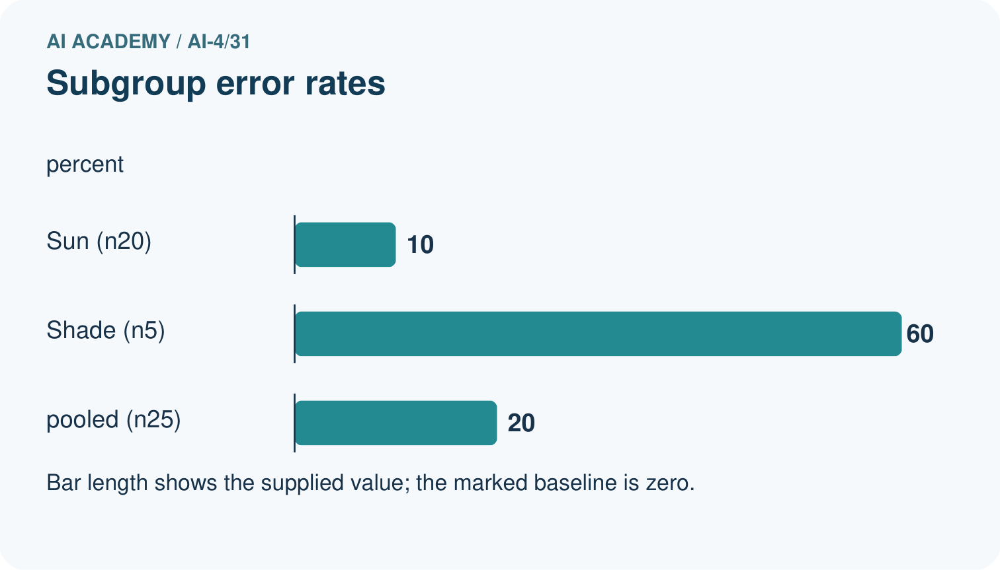
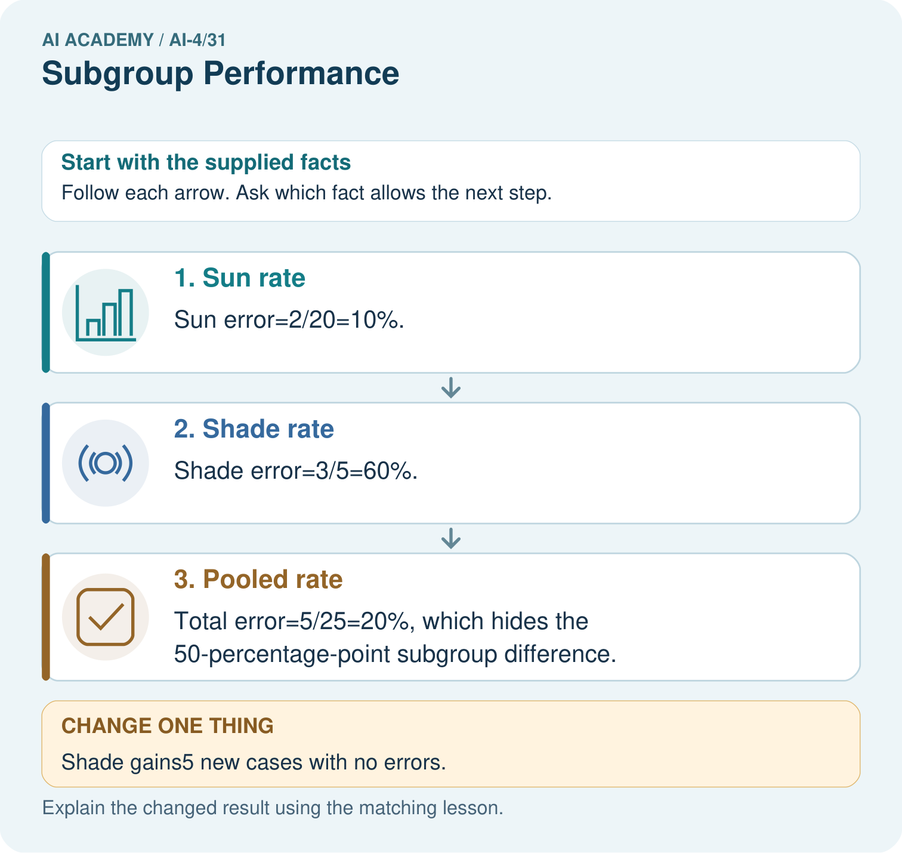
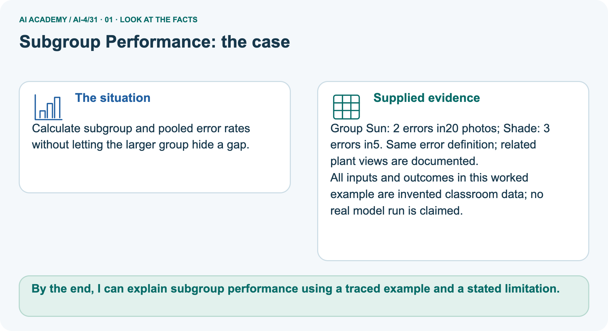
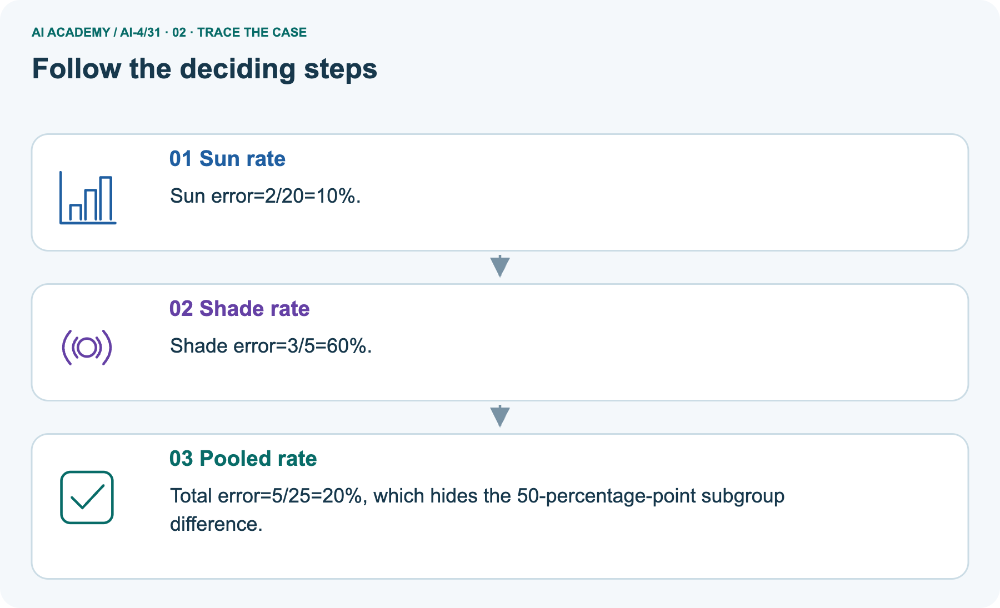
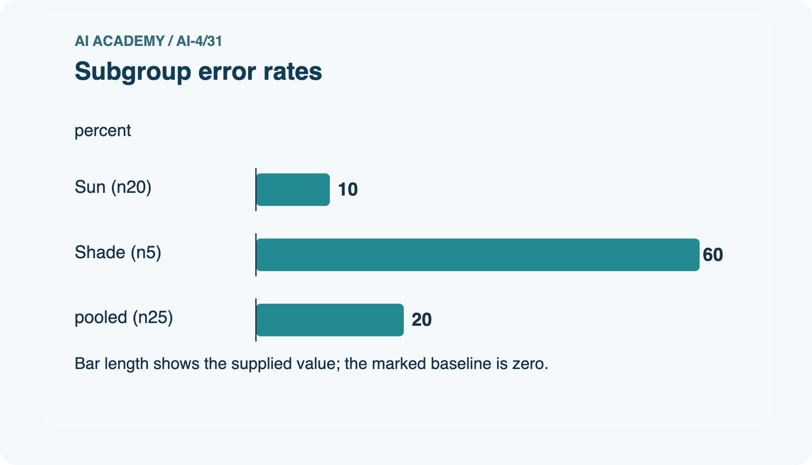
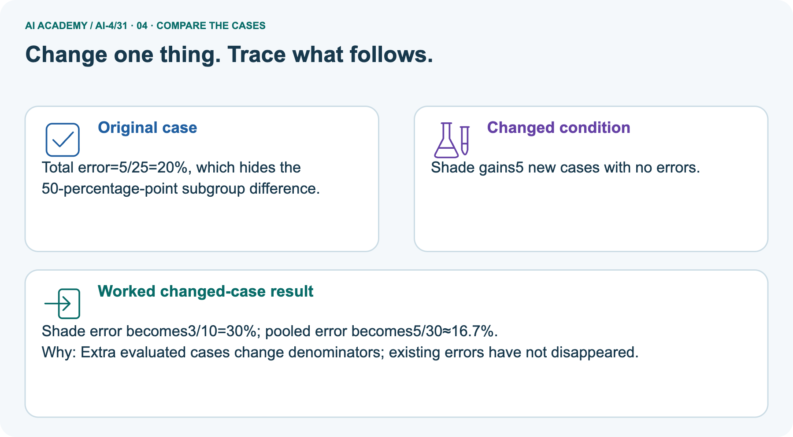
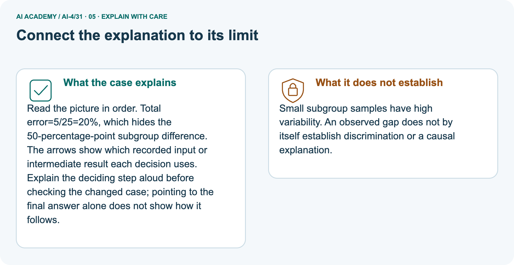

AI Academy · Level 4 · Grade 9 · Week 31 · Workbook
Subgroup Performance
Learn to understand, design, build, test and explain AI systems responsibly.
Project: Responsible Plant Classifier
THE CONNECTED WEEK
One readable subgroup-evidence record.
Compute separate rates,weighted totals and missing-evidence limits.
Keep one habit: W1–W3/W5 → selected X/Ytask → project slice record → changed-case return.
Main lesson · Section 1
Recall · Retrieve before notes
Keep this task’s complete inputs, stated rule and support record together.
Task and evidence record
Try the recall before opening notes. Then use a different colour or a labelled second line to correct your explanation.
Without opening the old lesson, explain one key idea from Improve Generalization. Give an example and a mistake that the idea helps you avoid.
Without opening the old lesson, explain one key idea from Learning Curves. Give an example and a mistake that the idea helps you avoid.
Without opening the old lesson, explain one key idea from Metrics Match Consequences. Give an example and a mistake that the idea helps you avoid.
Improve Generalization
Learning Curves
Metrics Match Consequences
Main lesson · Section 12
W1 · Explain the mechanism
Keep this task’s complete inputs, stated rule and support record together.
Task and evidence record
Main A2/20 errors=10%, B3/5=60%, pooled 5/25=20%, gap 50 percentage points. One changed originalBerror yields 2/5=40%. PictureSun/Shadearithmeticmatches; adding 5 error-freeShadecases yields 3/10 and5/30 pooled, not a model repair. Complete synthetic 25-case audit uses lightingbright/dim, typeAlpha/Beta, cameraA/B/C; spottedpositive. Error countsbright 0/10, dim 5/15, Alpha2/10, Beta3/15, A2/20, B3/5, Cunobserved.
Recallbright5/5, dim 6/8, Alpha5/5, Beta6/8, A10/10, B1/3, Cunavailable; pooled 11/13. Do not sum overlapping field totals.
Reference for this exercise: open this week’s student lesson, “Subgroup Performance”, at “See how it works” and “Follow a worked example”. Use the original worked values or code named in the question; the later pictorial case is a separate example. Keep this reference beside your workbook while practising.
Calculate the worked group and pooled rates.
Main lesson · Section 13
W2 · Trace the current experiment
Keep this task’s complete inputs, stated rule and support record together.
Task and evidence record
Main A2/20 errors=10%, B3/5=60%, pooled 5/25=20%, gap 50 percentage points. One changed originalBerror yields 2/5=40%. PictureSun/Shadearithmeticmatches; adding 5 error-freeShadecases yields 3/10 and5/30 pooled, not a model repair. Complete synthetic 25-case audit uses lightingbright/dim, typeAlpha/Beta, cameraA/B/C; spottedpositive. Error countsbright 0/10, dim 5/15, Alpha2/10, Beta3/15, A2/20, B3/5, Cunobserved.
Recallbright5/5, dim 6/8, Alpha5/5, Beta6/8, A10/10, B1/3, Cunavailable; pooled 11/13. Do not sum overlapping field totals.
How does correcting one B error affect its rate?
Main lesson · Section 14
W3 · Repair the reasoning
Keep this task’s complete inputs, stated rule and support record together.
Task and evidence record
Main A2/20 errors=10%, B3/5=60%, pooled 5/25=20%, gap 50 percentage points. One changed originalBerror yields 2/5=40%. PictureSun/Shadearithmeticmatches; adding 5 error-freeShadecases yields 3/10 and5/30 pooled, not a model repair. Complete synthetic 25-case audit uses lightingbright/dim, typeAlpha/Beta, cameraA/B/C; spottedpositive. Error countsbright 0/10, dim 5/15, Alpha2/10, Beta3/15, A2/20, B3/5, Cunobserved.
Recallbright5/5, dim 6/8, Alpha5/5, Beta6/8, A10/10, B1/3, Cunavailable; pooled 11/13. Do not sum overlapping field totals.
Group C has no evaluated cases. What is its measured error rate?
Main lesson · Section 16
W5 · Plan the next check
Keep this task’s complete inputs, stated rule and support record together.
Task and evidence record
Main A2/20 errors=10%, B3/5=60%, pooled 5/25=20%, gap 50 percentage points. One changed originalBerror yields 2/5=40%. PictureSun/Shadearithmeticmatches; adding 5 error-freeShadecases yields 3/10 and5/30 pooled, not a model repair. Complete synthetic 25-case audit uses lightingbright/dim, typeAlpha/Beta, cameraA/B/C; spottedpositive. Error countsbright 0/10, dim 5/15, Alpha2/10, Beta3/15, A2/20, B3/5, Cunobserved.
Recallbright5/5, dim 6/8, Alpha5/5, Beta6/8, A10/10, B1/3, Cunavailable; pooled 11/13. Do not sum overlapping field totals.
Why does equal accuracy not settle whether use is fair?
Main lesson · Section 4
Try alone · Selected experiment task
Keep this task’s complete inputs, stated rule and support record together.
Task and evidence record
Treat the selected X/Ygroups as the supplied disjoint 14-case comparison with the same error definition. Do not use the main 25-case camera table or invent a causal group difference. Report each count, pooled denominator and the four-case Ysample limitation. No per-class labels are given, so recall is not computable from these aggregate error counts alone.
Groups X 1 error/10 and Y 2/4: calculate separate and pooled rates, then state one limit.
Attempt this case before feedback. Record any help. Earlier examples below are further practice; a case already practised with feedback cannot establish fresh transfer.
Independent case: Apply independently
Main lesson · Section 9
Project · Keep the experiment evidence
Keep this task’s complete inputs, stated rule and support record together.
Task and evidence record
Add subgroup tables and a minimum acceptable threshold to the Plant Classifier release criteria.
The project change and evidence I will keep
Main lesson · Section 17
Feedback · Repair and return
Keep this task’s complete inputs, stated rule and support record together.
Task and evidence record
Revisit this idea with your teacher after a delay. Familiarity is different from explaining and using it on a changed case.
| Evidence | My record |
|---|---|
| Worked alone / hint / model | |
| First step I repaired and why | |
| New case checked later; date and result | |
| What I can now explain without notes | |
| One remaining question |
Main lesson · Section 10
Finish · Judge your evidence
Keep this task’s complete inputs, stated rule and support record together.
Task and evidence record
- I can explain the mechanism.
- I can show evidence.
- I can handle a changed case.
- I can name a limit.
Mark each as not yet, with help or independently, and attach supporting work.
Teacher review ____________________ Next step ____________________
Reference bank and extra practice
Choose the reference that helps your next step.
Reference · Supported W2 record
Reference · Section 2
Reference · Supported W2 record
Keep this task’s complete inputs, stated rule and support record together.
Task and evidence record
Use W2: Check sensitivity for Subgroup evaluation. Record the answer once; the lesson and workbook refer to the same attempt.
| Given inputs | Procedure I chose | Middle steps | Result and check |
|---|---|---|---|
Extra practice · Individual reasoning check
Reference · Section 3
Extra practice · Individual reasoning check
Keep this task’s complete inputs, stated rule and support record together.
Task and evidence record
Use the worked case for Subgroup evaluation. Proposed explanation: “A final answer is enough”. Decide whether this explanation is supported. Point to the step or supplied fact that decides; explain your repair if needed.
Reference · Earlier learning target
Reference · Section 5
Reference · Earlier learning target
Keep this task’s complete inputs, stated rule and support record together.
Task and evidence record
Device A gets 18/20 correct; B gets 6/10. Compute overall accuracy and the subgroup gap. What causal claim is not supported?
Extra practice · Earlier complete case
Reference · Section 6
Extra practice · Earlier complete case
Keep this task’s complete inputs, stated rule and support record together.
Task and evidence record
A has18/20 correct; B has6/10.
Compute subgroup results and evidence limits.
Show your trace, calculation or evidence
Extra practice · Changed case
Reference · Section 7
Extra practice · Changed case
Keep this task’s complete inputs, stated rule and support record together.
Task and evidence record
Accuracy is 18/20 in bright light and 6/10 in dim light. Compute both rates and the percentage-point gap.
My independent answer and reason
Week 31 Test and reflect
Extra practice · Design a revealing test
Reference · Section 8
Extra practice · Design a revealing test
Keep this task’s complete inputs, stated rule and support record together.
Task and evidence record
Create a changed input, boundary case or missing-information case. Write the expected answer or safe response before testing.
| Test record | My evidence |
|---|---|
| Changed input or condition | |
| Expected answer or fallback | |
| Observed result | |
| Why the result occurred |
Extra practice · Earlier transfer
Reference · Section 11
Extra practice · Earlier transfer
Keep this task’s complete inputs, stated rule and support record together.
Task and evidence record
Device A gets 18/20 correct; B gets 6/10. Compute overall accuracy and the subgroup gap. What causal claim is not supported?
Record support used: none, hint or teacher explanation.
Reference · Earlier W4 record
Reference · Section 15
Reference · Earlier W4 record
Keep this task’s complete inputs, stated rule and support record together.
Task and evidence record
Groups X 1 error/10 and Y 2/4: calculate separate and pooled rates, then state one limit.
Extra practice · Pictured case
Reference · Section 18
Extra practice · Pictured case
Keep this task’s complete inputs, stated rule and support record together.
Task and evidence record
Calculate subgroup and pooled error rates without letting the larger group hide a gap.
Group Sun: 2 errors in20 photos; Shade: 3 errors in5. Same error definition; related plant views are documented.
All inputs and outcomes in this worked example are invented classroom data; no real model run is claimed.
Why should the report retain subgroup rates alongside the total? Point to the relevant step in the picture, then write the changed result and the rule or evidence that supports it.
Support used: alone / hint / worked example. This record is practice evidence.
Project connection: For your Responsible Plant Classifier, save the input, procedure, observed result and limitation of this check.
Label this worked example as practice; use a different, previously unreviewed case when checking independent understanding.






Reference · Project portfolio milestone
Reference · Section 19
Reference · Project portfolio milestone
Keep this task’s complete inputs, stated rule and support record together.
Task and evidence record
Project: Responsible Plant Classifier
Current milestone: Present and defend. Demonstrate the system, explain one failure and justify the next improvement with evidence.
For your Responsible Plant Classifier, save the input, procedure, observed result and limitation of this check.
Label this worked example as practice; use a different, previously unreviewed case when checking independent understanding.
| Evidence to keep | My record |
|---|---|
| This week’s input and deciding step | |
| Prediction and actual result (or labelled paper trace) | |
| One change since the previous checkpoint and why | |
| One error or limit and the next test |
Extra practice · Predict, check and repair
Reference · Section 20
Extra practice · Predict, check and repair
Keep supported feedback separate from the reserved independent case.
First supported question and hint
Calculate subgroup and pooled error rates without letting the larger group hide a gap.
Which labelled step matches this detail? Total error=5/25=20%, which hides the 50-percentage-point subgroup difference.
1. Pooled rate
2. Sun rate
3. Shade rate
Hint if needed: Read the steps in the pictorial case. Match the supplied detail to the stage that performs or records it.
Practice 1: explain the deciding evidence
Check the first explanation
After your attempt, compare with the supported explanation: Pooled rate Total error=5/25=20%, which hides the 50-percentage-point subgroup difference. Read the picture in order.
Total error=5/25=20%, which hides the 50-percentage-point subgroup difference. The arrows show which recorded input or intermediate result each decision uses.
Explain the deciding step aloud before checking the changed case; pointing to the final answer alone does not show how it follows.
Changed-case question and hint
Changed-case practice: Shade gains5 new cases with no errors. Which conclusion is supported by the supplied facts?
1. We can decide the result without examining the changed input or the procedure.
2. Shade error becomes3/10=30%; pooled error becomes5/30≈16.7%.
3. This one example guarantees correct results for every future input.
Hint if needed: Use the changed condition and the deciding step in the pictorial trace. The answer must say what follows from those facts.
Practice 2: explain the deciding evidence
Check the changed explanation
After your attempt, compare with the supported explanation: Shade error becomes3/10=30%; pooled error becomes5/30≈16.7%. Extra evaluated cases change denominators; existing errors have not disappeared.
Repair and keep the record
Review Improve Generalization (ai-4/30). Goal: Plan one evidence-led change and test it on source-separated validation cases. Short practice: What fresh evidence is needed after adding crossed training data? Point to the relevant step in the picture, then write the changed result and the rule or evidence that supports it.. Return to this week and explain what you changed.
Review Learning Curves (ai-4/28). Goal: Read training-size learning curves. Short practice: What comparison is valid if the validation set changes between sizes?
Point to the relevant step in the picture, then write the changed result and the rule or evidence that supports it.. Return to this week and explain what you changed.
Review Metrics Match Consequences (ai-4/25). Goal: Apply a declared score threshold including equality. Short practice: Which labels determine the false-alarm count at threshold 0.4?
Point to the relevant step in the picture, then write the changed result and the rule or evidence that supports it.. Return to this week and explain what you changed.
Use Download completed work in the hosted lesson to export your answers, reflections, practice feedback and code-run evidence. Open the HTML copy to read or print it.
Drafts stay in this browser when storage is available; clear drafts on a shared device.
Earlier wording, alternatives and picture transcripts
Use this supported practice once, in the browser or on paper. Keep the reserved independent assessment for a separate first attempt before teacher feedback.
Repair a missing building block
Keep your completed work
Reference · Six-picture response sheets
Reference · Section 21
Reference · Six-picture response sheets
Choose the relevant picture instead of repeating every task.
01. Subgroup Performance: the case



Calculate subgroup and pooled error rates without letting the larger group hide a gap. Supplied facts: Group Sun: 2 errors in20 photos; Shade: 3 errors in5. Same error definition; related plant views are documented.
All inputs and outcomes in this worked example are invented classroom data; no real model run is claimed.
Point to the given fact that matters most. Explain why it matters.
02. Follow the deciding steps



Sun rate: Sun error=2/20=10%. → Shade rate: Shade error=3/5=60%. → Pooled rate: Total error=5/25=20%, which hides the 50-percentage-point subgroup difference.
Point to each numbered stage and explain which recorded input it uses.
03. Subgroup error rates



Subgroup error rates. Units: percent. Sun (n20): 10. Shade (n5): 60. pooled (n25): 20.
Read the labels and values. Explain the relationship the model shows.
04. Change one thing. Trace what follows.



Original case: Total error=5/25=20%, which hides the 50-percentage-point subgroup difference. Changed condition: Shade gains5 new cases with no errors.
Expected result: Shade error becomes3/10=30%; pooled error becomes5/30≈16.7%. Reason: Extra evaluated cases change denominators; existing errors have not disappeared.
Predict before checking the worked changed-case result. Name what changed and what the supplied facts allow you to conclude.
05. Connect the explanation to its limit



Read the picture in order. Total error=5/25=20%, which hides the 50-percentage-point subgroup difference. The arrows show which recorded input or intermediate result each decision uses.
Explain the deciding step aloud before checking the changed case; pointing to the final answer alone does not show how it follows. Limit: Small subgroup samples have high variability.
An observed gap does not by itself establish discrimination or a causal explanation.
Explain the case, then point to a limit on the claim.
06. Make the idea visible in your project


For your Responsible Plant Classifier, save the input, procedure, observed result and limitation of this check.
Label this worked example as practice; use a different, previously unreviewed case when checking independent understanding. Draw your input, deciding step, result and limit.
Supported question: Why should the report retain subgroup rates alongside the total? Point to the relevant step in the picture, then write the changed result and the rule or evidence that supports it.
Draw your project trace and justify the deciding step using evidence.